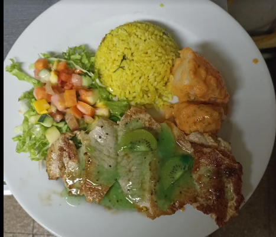

Zonas

Mar Y Fuego
Un restaurante que ofrece una experiencia gastronómica única con un enfoque en mariscos frescos y platos innovadores.
Carrera 43A # 10-25, Medellín, Antioquia
Teléfono: 444-4444

Cala Roca
Un lugar acogedor que combina la cocina mediterránea con un ambiente relajante y vistas impresionantes.
Carrera 38 # 8-20, Medellín, Antioquia
Teléfono: 444-5555

Restaurante Candilejas
Un restaurante que ofrece una variedad de platos típicos colombianos, con un enfoque en la frescura y calidad de los ingredientes.
Carrera 43A # 10-25, Sabaneta, Antioquia
Teléfono: 444-4444

La Parrilla de Sabaneta
Un lugar acogedor que combina la cocina mediterránea con un ambiente relajante y vistas impresionantes.
Carrera 38 # 8-20, Sabaneta, Antioquia
Teléfono: 444-5555

La Fontana
Un restaurante que ofrece una variedad de platos típicos colombianos, con un enfoque en la frescura y calidad de los ingredientes.
Cl. 53 #51-30, Villa Paula, Itagüi, Antioquia
Teléfono: 3723250

La Montaña que Piensa
Un lugar acogedor que combina la cocina mediterránea con un ambiente relajante y vistas impresionantes.
Carrera 38 # 8-20, Itagüi, Antioquia
Teléfono: 444-5555